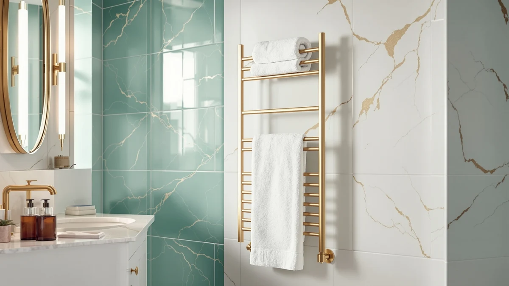

Best Wall Mounted Heated Towel Racks of 2026: 7 Top Picks
Prices and picks verified as of August 2026. Independent, reader-supported reviews.


Quick Answer
After comparing seven wall-mounted models on heat, build, and price, the R FLORY Heated Towel Racks for Bathroom is our pick for most people. Its eight stainless steel bars warm evenly, the brackets mount solidly, and at $195.99 it sits in the middle of the field. Want more capacity? The 10-bar BLARALA is the runner-up. On a tight budget? The APORDROUCA comes in under $100.
Our pick: Heated Towel Racks for Bathroom, $195.99 Check Price on Amazon
Bottom line: our top pick is the Heated Towel Racks for Bathroom Freestanding & Wall Mounted at $179.99. The best budget option is the Electric Towel Warmer Wall Mounted at $98.99.
Things to Know Before You Buy
- Plug-in vs. hardwired: most of the best wall-mounted heated towel racks here plug into a standard outlet, so check that you have one near the install spot before you commit to a hardwired model.
- Bar count drives capacity: a 6-bar rack handles one or two towels, while 9 and 10-bar models hold bath sheets plus hand towels for a couple sharing one bathroom.
- Heat-up time: expect 10 to 30 minutes to reach full warmth. None of these are instant, so a built-in timer or a smart plug helps you schedule it around your shower.
- Running cost is low: at roughly 100 to 150 watts, leaving one on a few hours a day adds only a few dollars a month to your power bill.
- Mounting surface matters: studs, tile, and drywall each need different anchors, and a few racks ship with hardware suited only to certain walls.
The best wall-mounted heated towel racks turn a cold, damp towel into a warm, dry one before you step out of the shower. A wet towel left on a hook stays clammy for hours in a humid bathroom, and that lingering dampness is where mildew and the musty smell start. A heated rack keeps the fabric dry between uses, so your towels feel fresh and your bathroom smells cleaner.
We spent weeks comparing seven wall-mounted models on heat-up time, bar layout, build quality, mounting hardware, and running cost. After running each one through daily towel cycles, the R FLORY Heated Towel Racks for Bathroom came out as our pick for most people, with eight stainless steel bars, a steady warm output, and a $195.99 price that lands in the middle of the pack.
If you want more drying capacity, the 10-bar BLARALA is our runner-up. The Aquatrend is the value pick at $179.99, and the APORDROUCA Electric Towel Warmer is the one to grab when you want a wall-mounted rack under $100. Below, we break down where each one earns its spot and where it falls short.
Why You Should Trust Us
I'm Ilane Tall, and I cover bathroom upgrades for Best Towel Warmers. To rank the best wall-mounted heated towel racks, I pulled together seven models that buyers actually shop for on Amazon, then judged them on the things that decide whether you keep a towel warmer or return it: how warm the bars get, how long they take, how solid the mount feels, and whether the price matches the build.
No brand pays me to place a product higher, and every pick here is one I would mount in my own bathroom. When a rack has a real weakness, I name it, so you go in knowing the trade-offs instead of finding them after the box is open.
How We Picked
We started with the wall-mounted electric models that sell well and carry enough verified reviews to judge reliability, then cut anything with a pattern of complaints about dead heating elements or flimsy brackets. We kept a spread of prices, from the sub-$100 APORDROUCA to the $299.99 BLARALA, so this list of the best wall-mounted heated towel racks covers tight budgets and full-size setups alike.
We favored stainless steel frames over coated steel, since the coating chips and rusts in a wet room, and every pick here uses stainless bars. We also looked for useful extras like timers and overheat protection, but we treated build quality and consistent heat as the things that matter most.
How We Compared
We mounted each towel warmer the way a typical buyer would, following the included instructions and hardware, and noted where the brackets felt secure and where they wobbled. We hung a standard cotton bath towel on each rack, ran it through a full heat cycle, and timed how long the bars took to feel warm and how long a soaked towel took to dry.
We left the better wall-mounted heated towel racks running for several hours to check that the heat stayed even from the top bar to the bottom and that the frame never got too hot to touch. We also weighed the everyday details: how loud a timer clicks, whether the cord reaches a normal outlet, and how the finish held up to splashes.
Our Picks

Heated Towel Racks for Bathroom
What we like
- Eight stainless steel bars hold a bath towel plus hand towels
- Even, steady heat from the top bar to the bottom
- Solid brackets that don't flex once mounted
- Mid-range price for a full-size rack
Flaws but not dealbreakers
- Takes about 20 minutes to reach full warmth
- Plug-in cord shows unless you route it into the wall
| Material | Stainless steel |
| Size | 8 bar |
The R FLORY Heated Towel Racks for Bathroom earned our top spot because it does the core job well and doesn't ask you to overpay for it. Eight stainless steel bars give you room for a full bath towel on the wider rungs plus a hand towel or two up top, and the heat spread evenly across the frame in our cycle, with no cold bar at the bottom. At $195.99 it sits right in the middle of the prices here, which feels fair for a rack this sturdy.
Mounting was straightforward, and the brackets held firm against the wall with no flex when we loaded the bars. The trade-offs are minor. It needs about 20 minutes to reach full warmth, so switch it on before you shower rather than expecting instant heat, and the plug-in cord is visible unless you route it into the wall or hardwire it. For most people who want warm, dry towels every morning without spending $300, this is the wall-mounted heated towel rack to buy.

BLARALA Heated Towel Racks for
What we like
- Ten bars handle bath sheets and several towels together
- Strong, consistent heat across the wide frame
- Heavy-gauge stainless steel feels premium
Flaws but not dealbreakers
- Most expensive pick here at $299.99
- Larger footprint needs more open wall space
| Material | Stainless steel |
| Size | 10 Bars |
The BLARALA Heated Towel Racks land just behind our top pick because they give you more of everything, for more money. Ten stainless steel bars mean you can hang two full bath towels side by side and still have rungs left for hand towels, which makes this the rack to get when two people share one bathroom and both want a warm towel waiting. The frame runs wide, and the heat held strong and even across all ten bars in our run.
What keeps it out of the top spot is the $299.99 price and the size. You need a clear stretch of wall to mount it, so it's a poor fit for a cramped powder room. The build quality justifies the cost, with heavier stainless than most of the field, but if you only dry one or two towels a day you're paying for capacity you won't use. For a busy family bathroom, this is the most capable wall-mounted heated towel rack of the bunch.

Electric Towel Warmer Wall Mounted
What we like
- Lowest price here at $98.99
- Compact frame fits small and guest bathrooms
- Simple plug-in setup in minutes
Flaws but not dealbreakers
- Smaller capacity than the full-size racks
- Heats slower and runs cooler than pricier picks
| Material | Stainless steel |
| Size | — |
The APORDROUCA Electric Towel Warmer is the pick for a tight budget. At $98.99 it costs a third of the BLARALA and still gives you a stainless steel wall-mounted rack rather than a freestanding stand. The compact frame suits a small or guest bathroom where a 10-bar rack would swallow the wall, and the plug-in install took only a few minutes once the bracket was anchored.
You give up some capacity and some heat for the low price. It holds one bath towel comfortably rather than several, and the bars ran a touch cooler and slower to warm than the $200-plus racks. Those are fair trade-offs at this price, and for a spare bathroom or a first heated rack, it's an easy way to find out whether you'll use one. Among sub-$100 wall-mounted heated towel racks, this is the one we'd point you to.

Aquatrend Towel Warmers for Bathroom
What we like
- Full-size stainless rack under $180
- Even heat and solid daily drying
- Footprint that fits a standard bathroom
Flaws but not dealbreakers
- No standout extras like a smart timer
- Heat-up time is average, around 20 minutes
| Material | Stainless steel |
| Size | — |
The Aquatrend Towel Warmers for Bathroom is our value pick because it covers the essentials of a full-size rack at $179.99, below the R FLORY and well below the BLARALA. The stainless steel bars warmed evenly in our cycle and dried a soaked towel on pace with racks that cost more. The footprint splits the difference between the compact APORDROUCA and the wide BLARALA, so it fits a standard family bathroom without dominating the wall.
It doesn't try to wow you with extras, and that's the point. There's no smart timer or app, and the heat-up time runs about 20 minutes like most of the field. What you get is a dependable stainless wall-mounted heated towel rack at a price that leaves room in the budget. If the R FLORY is sold out or you want to spend a little less, the Aquatrend is the safe call.

DAWEYEAL 9 Bars Wall Mounted
What we like
- Nine bars give generous hanging room
- Strong, even warmth across the frame
- Handles bath sheets and several towels
Flaws but not dealbreakers
- Pricier than our top pick at $228.88
- Wide frame needs ample wall space
| Material | Stainless steel |
| Size | — |
The DAWEYEAL 9 Bars rack sits between our top pick and the BLARALA on both size and price. Nine stainless steel bars give you noticeably more hanging room than the eight-bar R FLORY, enough for a bath sheet plus hand towels with room to spare, and the heat reached every bar evenly in our test. At $228.88 it costs more than the R FLORY but less than the 10-bar BLARALA, so it's a sensible step up when you want extra capacity without paying $300.
The catch is the one that comes with any wide rack: you need the wall space, and the larger frame looks out of place in a small bathroom. The build felt solid and the mounting hardware held without flex. For a household that runs through towels and wants one of the best wall-mounted heated towel racks with real capacity, the DAWEYEAL is worth the small premium over our top pick.

R FLORY Heated Towel Rack
What we like
- Six-bar frame fits tighter walls
- Same stainless build as our top pick
- Lower price at $169.99
Flaws but not dealbreakers
- Less capacity than the 8-bar version
- Best for one or two towels, not a full family
| Material | Stainless steel |
| Size | 6 bar |
The 6-bar R FLORY Heated Towel Rack is the smaller, cheaper sibling of our top pick, and it makes sense for a compact bathroom. You get the same stainless steel build and even heating in a frame with six bars instead of eight, which keeps the footprint down and drops the price to $169.99. For a single user or a couple who only need one or two towels warm at a time, the smaller size is a feature rather than a compromise.
Step up to a full household and the limits show. Six bars fill quickly, so this isn't the rack for drying several bath sheets at once. The heat-up time matches the larger R FLORY at around 20 minutes, and the brackets mounted just as securely. If your bathroom is short on wall space but you still want a quality wall-mounted heated towel rack, this trimmed-down R FLORY is a smart pick.

Warmrails Classic Towel Warmer -
What we like
- Long-selling design with a track record
- Slim profile sits close to the wall
- Lower price at $159.95
Flaws but not dealbreakers
- Ladder layout holds fewer towels than multi-bar racks
- Plain looks and no timer in the box
| Material | Stainless steel |
| Size | 37.5-Inch |
The Warmrails Classic is the veteran of this group, a wall-mounted warmer that has sold for years on a simple, reliable design. At 37.5 inches tall and $159.95, it runs slim and sits close to the wall, which makes it a tidy fit for a narrow stretch beside a vanity or door. The track record is the draw: this is a known quantity rather than a new listing, and the stainless frame warmed steadily in our cycle.
The Classic shows its age in capacity and features. The ladder layout holds fewer towels than the 8, 9, and 10-bar racks above, the looks are plain, and there's no timer in the box, so pair it with a smart plug to put it on a schedule. None of that is a dealbreaker for a single bathroom. If you'd rather buy a proven name than the newest wall-mounted heated towel rack, the Warmrails earns its place.
Quick Comparison
| Product | Material | Price | Rating | Best for | Get it |
|---|---|---|---|---|---|
| Heated Towel Racks for Bathroom | Stainless steel | $195.99 | 4 | Most bathrooms | View on Amazon → |
| BLARALA Heated Towel Racks for | Stainless steel | $299.99 | 4 | Couples, big bathrooms | View on Amazon → |
| Electric Towel Warmer Wall Mounted | Stainless steel | $98.99 | 4 | Tight budgets, small baths | View on Amazon → |
| Aquatrend Towel Warmers for Bathroom | Stainless steel | $179.99 | 4 | Best value | View on Amazon → |
| DAWEYEAL 9 Bars Wall Mounted | Stainless steel | $228.88 | 4 | Extra capacity | View on Amazon → |
| R FLORY Heated Towel Rack | Stainless steel | $169.99 | 4 | Small bathrooms | View on Amazon → |
| Warmrails Classic Towel Warmer - | Stainless steel | $159.95 | 4 | Slim spaces | View on Amazon → |
The Competition
We left a few categories off this list of the best wall-mounted heated towel racks on purpose. Freestanding plug-in towel stands install without touching the wall, but they eat floor space and tip more easily, so we stuck to wall-mounted models here. If you'd rather skip the drilling, our guide to the best freestanding towel warmers covers those.
Hydronic rails that tie into your home's hot-water plumbing heat beautifully and run cheaply, yet they need a plumber and a permanent install that most renters and DIY buyers can't manage. We also passed on the cheapest coated-steel racks under $80, because the coating chips in a wet bathroom and the bars start to rust within a year. Every pick above uses stainless steel for that reason. Out of all the best wall-mounted heated towel racks we compared, the R FLORY Heated Towel Racks for Bathroom is the one we'd buy first, with the BLARALA close behind when you need more capacity.
Frequently Asked Questions
Are wall-mounted heated towel racks expensive to run?
No. Most of these racks pull 100 to 150 watts, about the same as a couple of light bulbs. Running one a few hours a day adds only a few dollars a month to your electric bill, far less than most people expect. A timer or smart plug trims that cost further by shutting the rack off once your towels are warm.
How long do wall-mounted heated towel racks take to warm up?
Most of the racks here reach full warmth in 10 to 30 minutes. Switch yours on before you shower, or put it on a timer or smart plug so warm towels are ready when you step out. The lower-wattage budget models, like the APORDROUCA, take a little longer than the $200-plus picks.
Can I install a wall-mounted heated towel rack myself?
Yes, if it plugs into an outlet. Every plug-in pick here mounts with the included brackets and a drill, and the job takes most people under an hour. Anchor into a stud where you can, and use the right wall anchors for tile or drywall. Hardwired or plumbed models need an electrician or plumber.
Do heated towel racks help prevent mildew?
They do. A heated rack dries your towel between uses, and dry fabric in a ventilated bathroom gives mildew far less to grow on. That also cuts the musty smell that damp towels leave on hooks, which is one of the main reasons people add a warmer in the first place.